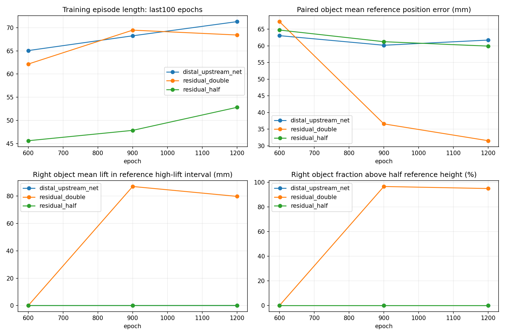
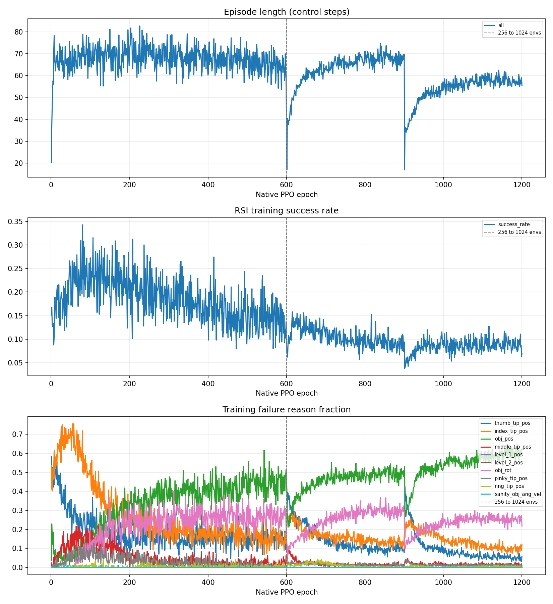
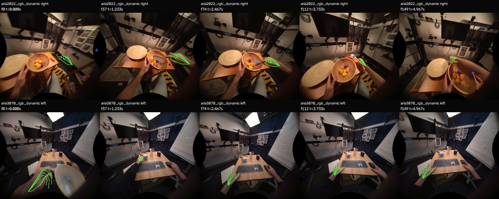

原视频 30 Hz · 单目 RGB
TACO · stir完整原片
原片是所有媒体与曲线的公共时钟。
从单目人类视频，到手物重建、机器人执行与同步合成。
全流程已贯通，主例与 cut 能抬起物体。三段完整任务均未通过论文判据；右物体的朝向与持续抓持仍是主要缺口。
默认展示最终统一配置，历史与独立对照保留在下方。
载入视频与已保存的真实状态…
原片是所有媒体与曲线的公共时钟。
各列按原片帧对齐；重建参考与实际执行分列。
497控制步的保存状态，原时序合成249帧。
完整评估抑制提前重置；内部首失败保留记录。参数和检查点按训练、仿真及预测参考选择，GT用于独立评价。
论文任务判据：两物体在每个原RGB帧均满足平移误差 <100 mm、旋转误差 <1 rad。对同一演示使用一次共同刚体对齐，固定尺度；各物体消除首共同帧的固定朝向偏置。
本次为三段开发验证、每配置 seed 0。cut曾进入反复训练与诊断；论文 TACO 共37段的精确演示ID尚未取得。下列论文数字用于说明各自统计范围。
| 任务 / 物体 | 源帧覆盖 | 最大平移 mm | 最大旋转 rad | 对象判据 |
|---|
CD：物体表面距离；F@5：5毫米内形状匹配比例；RA：手腕平移对齐后的手关节误差；ATE / ARE：物体位置 / 朝向误差；RTE / RRE：相邻原帧的相对运动误差；CDh：以绑定手腕为原点的物体表面距离；SD：固定手、释放物体约0.146秒的稳定性位移；Dpen：每帧最大手物穿透的平均。F@5越大越好，其余越小越好。
形状使用单物体Sim(3)对齐，轨迹使用双物体共同固定尺度SE(3)对齐。三段位置/朝向分母为249/200/209帧，相对运动分母为248/199/208对。
从原RGB到保存状态，逐阶段保留结果和范围。
四段原始接触概率、同一视频下 A2→A3 接触优化、三段独立 GT 几何近邻及可旋转 3D MANO 热力图；不将贴近率误当物理接触成功。
Scene深度输入原最终链使用raw-depth teacher；论文要求aligned depth。已完成独立修正链，最终统一控制仍使用原冻结输入。
cut额外预处理A3 touch预处理移动左板，平均16.15 mm、最大34.12 mm；主例与brush关闭该prepass。
通用控制扩展新增指腹接触目标、参考前馈、稳定物理配置、残差/平滑和额外早期课程。上游增益与末指节读体单独标注。
主碗、主勺、cut右刀在A1已越过旋转阈值。大角度偏差逐步积累，后续12°旋转修正难以恢复。
查看逐阶段曲线 ↗仅手遮挡使主勺严重遮挡128帧降为0、刀101帧降为14。三件原失败物体的全程判据仍失败。
查看源码对照 ↗残差翻倍让右刷持续抬高79.76 mm、半参考高度占比95%；主例退化超过预定门槛，因此保留为独立对照。

brush持物改善后，主例与cut的位置误差和抬高退化均不得超过2 mm。GT在选型冻结后评分。
| brush配置 | 位置误差 mm | 高抬区实际均高 mm | 半参考高度比例 |
|---|
同参数用于主例后，位置误差增加8.10 mm、抬高降低11.34 mm。最终统一配置保持原C3。残差×2的brush右物体GT最大旋转1.23983 rad，任务仍未通过。
| 配置 | 改动类别 | epoch / env | 末100长度 | RSI训练成功率 | 参考位置误差 mm | GT任务 |
|---|
RSI为随机参考帧初始化的训练成功率。三个任务均保留最优900轮 / 末次1200轮；1200轮的整体物理表现回退，按300轮平台规则停止。

同卡并行按各进程实际时间求和。早期正式训练、评估、渲染及CPU重定向另计。
探索候选、旧片段与最终三任务分别呈现。
早期直接PPO约9步结束。加入参考前馈后的500轮策略覆盖30控制步，仅16/249原RGB帧；前缀误差采用16帧分母，其余233帧缺失。完整参考动画与完整真实执行分别记录。
阅读初版RL报告 ↗保留低通、观测、深度、尺度、静止和联合平移对照。盒子接触候选使物体位置误差64.38→53.14 mm，同时腕误差43.98→53.02 mm，记录这项取舍。
查看探索记录 ↗
另有TACO dust221、OakInk2 707/699帧输入库存，未计入最终三段完整机器人结果。
论文采用arXiv v1。核心代码为公开匿名候选 EgoMatrix2027/EgoMatrix，固定提交 e1ebcc3a375a36d6a2ac4d4467008566f67e1205，具名作者归属待确认。生产适配器、IsaacSim环境迁移和完整合成链由本项目补齐。
物理环境为IsaacSim5.1 / IsaacLab2.3.2，最终物体质量与摩擦保持。最终控制采用XHand增益500/30、资产力矩上限、末指节对象过滤取力、残差1、动作滑动平均0.2、早期对象阈值×4/96000步课程。新功能均由显式开关启用，旧默认与历史产物保留。
报告中的“未运行”“诊断”“独立对照”表示各自产物范围。目标背景迁移尚无完整最终实证。所有评价数字来自保存的预测、真实状态和冻结评分，网页交互只定位与显示。